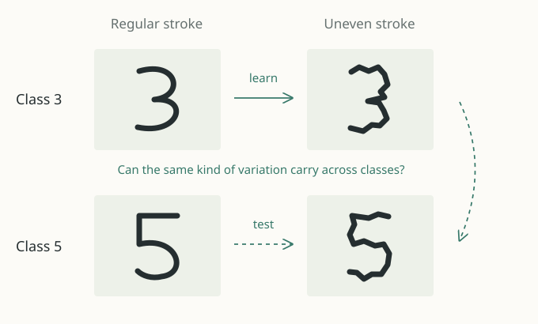

How much of a model
can the data reveal?
Experiments with biological models, gene networks and image representations.
01 Mechanistic model inference
Do pulses help separate
the models?
A cell can regulate protein production at two different steps. Its protein trace can look similar either way. Which experiment makes those explanations easier to tell apart?
In the tested simulations, three input pulses raise correct model selection from 61–83 to 99–100 out of 100 trials, depending on the true mechanism. Duration, sample count, and total input stay fixed.
Based on the gene-expression models in Ryzowicz & Yildirim (2023).
Input experiment and rate comparison ↗
Correct selections across 100 noisy trials per input schedule.
Curves show the two models after fitting. Counts come from separate trials with added noise: 80 measurements over 300 minutes, with the same noise level for both input schedules.
02 Gene-network recovery
When does removing
shared activity help?
Many genes respond together. That shared activity can obscure which genes directly influence others, a central problem in gene-network inference.
A controlled simulation varies shared activity and noise separately. At one illustrated setting, removing the largest shared component raises the recovery score from 0.24 to 0.63. The map shows how that benefit changes with signal and noise.
The wider study compares recovery methods on DREAM4 and BoolODE and examines real perturbation-response data.
Recovery map, benchmarks & limits ↗Each point averages five simulated networks. Change the signal level to compare the same two methods.

Compare the recovery scores as shared activity increases.
Score: average precision normalized to the edge-density baseline. 0 = baseline; 1 = perfect ranking. Simulated rank-1 shared component.
03 Structured transforms
Which image changes transfer
to new examples?
A dataset may label a digit as a 3 or a 5, while saying nothing about its slant, thickness, or uneven strokes. Could the variation among examples of one class reveal structure that also appears in another?
A recorded experiment finds color-related variation using shape labels alone. Further tests show patterns learned from handwritten digits and a brightness rule inside a trained image model.
One concrete encoder result: a fitted brightness rule transfers to 96 new image configurations and six multipliers. The broader question connects to learning representations from paired changes.
Shared attributes, image changes & results ↗
Illustration of the aim. The study page shows the measured variation directions and the separate transfer experiments.